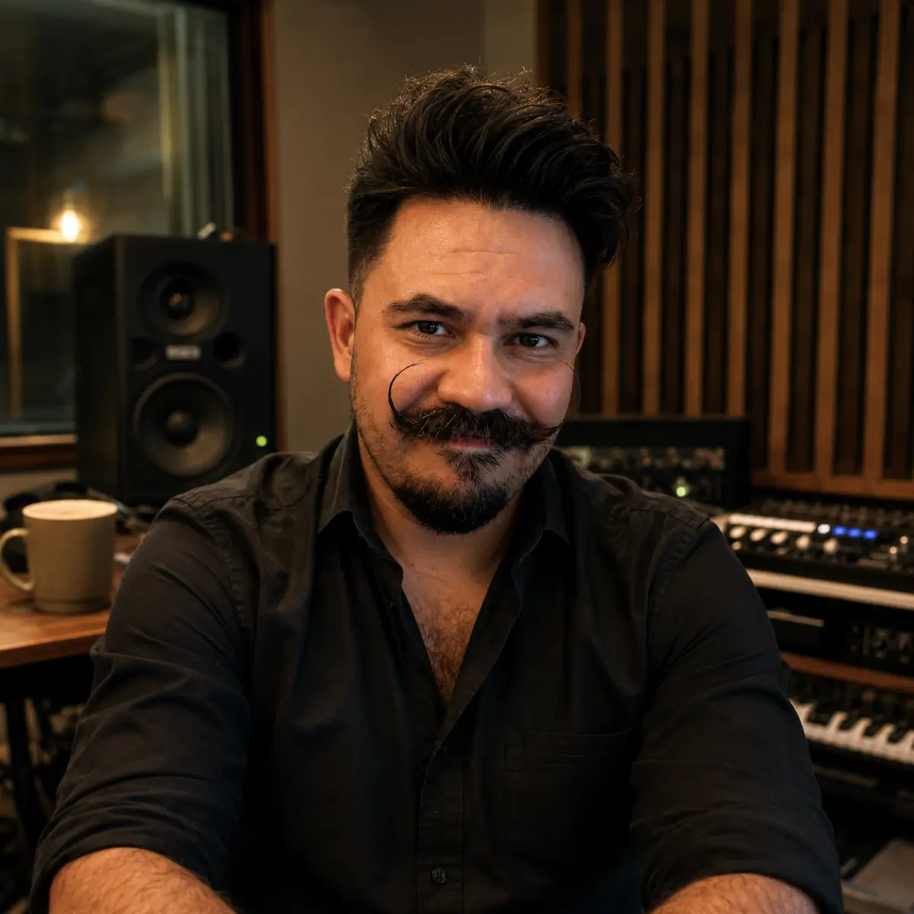

01 / FIELD NOTE
I Tracked a Phantom AI Artist for 18 Months. The Problem Isn't Technological, It's Economic
Read the research ↗1.97days per releaseJAN 2025 — AUG 2026 / OBSERVED DATA

A mind in practice01 —
01 / FIELD NOTE
02 —
03 —
04 —
05 —